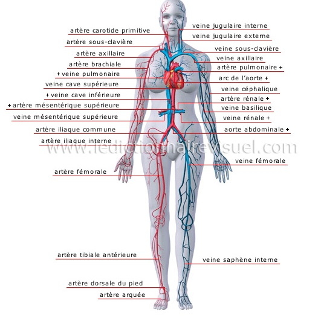
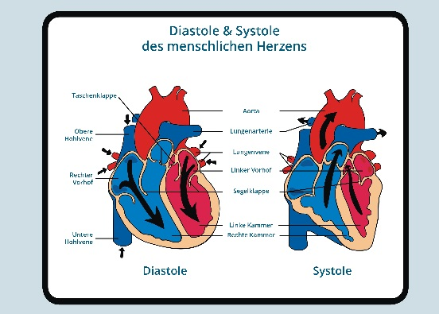

Physiologie cardio-circulatoire

La circulation sanguineLe sang est continuellement pompe et ejecte hors du cœur par des vaisseaux differents. Il existe deux circuits vasculaires qui ont tous les deux leur origine et leurs fins dans le cœur :
- La petite circulation ou circulation pulmonaire :
- Cœur droit (oreillette + ventricule).
- Artere et veines pulmonaires.
- Poumons.
C’est dans les capillaires pulmonaires que se font les echanges gazeux au niveau des alveoles pulmonaires. Le sang est debarrasse de son exces de CO2 et enrichi en O2. Le sang oxygene est draine par les veines pulmonaires et achemine vers l’oreillette gauche puis le ventricule droit : c’est le circuit d’oxygenation du sang.
- La grande circulation ou circulation systemique :
- Le cœur gauche.
- L’aorte et ses branches.
- Le systeme veineux cave.
Le ventricule gauche ejecte le sang dans l’aorte puis dans tout l’organisme jusqu’aux capillaires systemiques : capillaires sanguins. Au niveau de ces capillaires, le sang cede de l'O2 aux tissus et capte du CO2. Le sang desature en O2 est ramene par les veines au cœur droit.

Le fonctionnement cardiaque
Le fonctionnement cardiaque consiste en des alternatives de contraction et de relechement du myocarde.
L’ensemble des phenomenes dont le cœur est le siege depuis le debut d’une contraction jusqu’au debut de la suivante s’appelle une revolution cardiaque. Elle comprend 3 temps :
-
Systole auriculaire : les fibres des oreillettes se contractent entraenant une diminution de leur volume et ejectant le sang qu’elles contiennent dans les ventricules. Les valves auriculo-ventriculaires (tricuspide et mitrale) sont ouvertes car la pression des oreillettes est superieure a celles des ventricules.
-
Systole ventriculaire : les fibres des ventricules se contractent entraenant une diminution de leur volume et ejectant le sang qu’elles contiennent dans l'aorte et l'artere pulmonaire. La poussee de sang ferme les orifices auriculo-ventriculaires mitral et tricuspidien, empechant le reflux de sang dans les oreillettes.
-
Diastole generale : diastole auriculaire et diastole ventriculaire. C'est la pause des oreillettes et des ventricules, c’est la periode de relechement du cœur pendant laquelle les ventricules ou les oreillettes se remplissent de sang.

Proprietes de mecanisme de la fibre cardiaqueLes contractions du muscle cardiaque sont provoquees par des impulsions electriques regulieres.
- L’elasticite : propriete passive. La fibre cardiaque est une structure distensible au niveau d’une cavite cardiaque et surtout au niveau du ventricule gauche : on utilise le terme de compliance (c’est le rapport entre le volume d’un reservoir elastique et la pression du fluide qu’il contient).
-
La contractilite : propriete active. La fibre myocardique est une structure a la fois elastique et contractile c'est-e-dire qu’elle peut e la fois se distendre et se contracter. La contractilite correspond e la capacite des fibres a fournir une certaine tension durant un certain temps.
-
Teledisatole : etat dans lequel se trouve la cavite (oreillette ou ventricule) au moment oe elle est au repos et completement remplie. Quand le ventricule est en telediastole donc rempli, son volume correspond au volume de sang qu’il contient. La pression que le sang exerce que le sang exerce sur les parois s’appelle la pression telediastolique. Cette pression est la precharge du ventricule c'est-e-dire la force de distension qui etire le muscle ventriculaire avant son excitation electrique et avant sa contraction. Cette precharge est faible sur un ventricule gauche normal. Il y a aussi une adaptation de la puissance contractile du coeur a la quantite de sang qui lui parvient. Si le retour veineux augmente, les fibres myocardiques sont etirees au maximum, la precharge augmente, la contraction sera plus importante pour permettre d’ejecter un volume de sang plus important. Lors de sa contraction, le ventricule ne peut immediatement ejecter le sang dans l’aorte pour pouvoir le faire, il faut qu’il developpe une pression superieure a celle de l’aorte. C’est donc une charge que doit vaincre le cœur qui s’appelle la postcharge. Le ventricule, apres avoir vaincu la resistance que lui opposait la pression sanguine, peut enfin ejecter le sang.
L'automastisme cardiaque Le systeme nerveux intrinseque
Il s’agit du systeme nerveux situe dans les parois meme du cœur. Meme isole, le cœur continue a fonctionner et continue de se contracter rythmiquement : on dit que le cœur est doue d’automatisme. Cet automatisme est donc du a un groupe de cellules qui commande le cœur : le tissu nodale contenant des cellules nodales.
Il comporte 4 differents elements oe se succede l'excitation electrique cardiaque :
- Le nœud de Keith et Flack situe dans la paroi de l'oreillette : systole auriculaire.
- Le noyau d'Aschoff-Tawara situe dans la cloison inter-auriculaire.
- Le faisceau de His situe dans la cloison inter-ventriculaire.
- Le reseau de Purkinje situe dans la paroi des ventricules : systole ventriculaire.
C’est le systeme nerveux vegetatif. A l’etat normal, il n’intervient en fait que pour modifier l’action cardiaque et pour l’adapter a l’action generale de l’organisme. Le systeme nerveux vegetatif comprend 2 elements : le systeme parasympathique et le systeme sympathique.
Le systeme parasympathiqueC’est le systeme qui permet de freiner le cœur : c’est un systeme cardio-moderateur. Il a une double action donc soit il peut ralentir la frequence cardiaque soit il va permettre de ralentir la conduction auriculo-ventriculaire et ce grece a une substance chimique un neurotransmetteur : l’acetylcholine.
Le systeme sympathiqueC’est le systeme qui permet d'accelerer le cœur : c’est un systeme cardio-accelerateur. Il a un systeme de neurotransmetteur : la noradrenaline.
Le coeur tout seul ne peut rien faire si le cerveau n’intervient pas donc il a besoin du cerveau pour fonctionner.